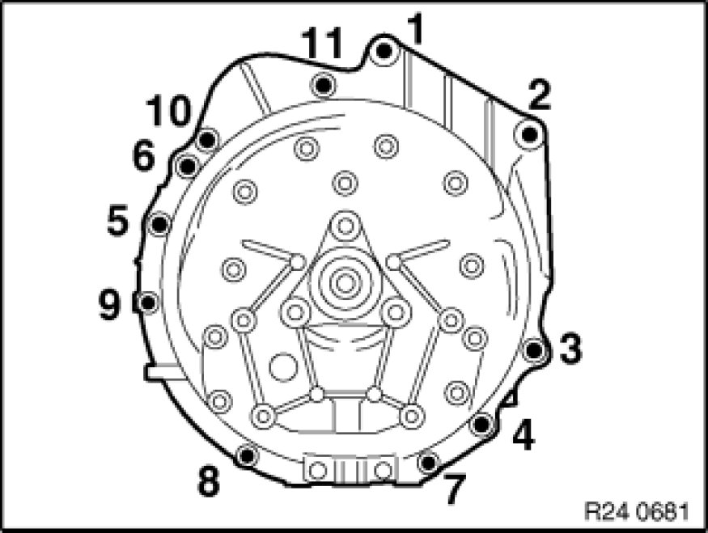
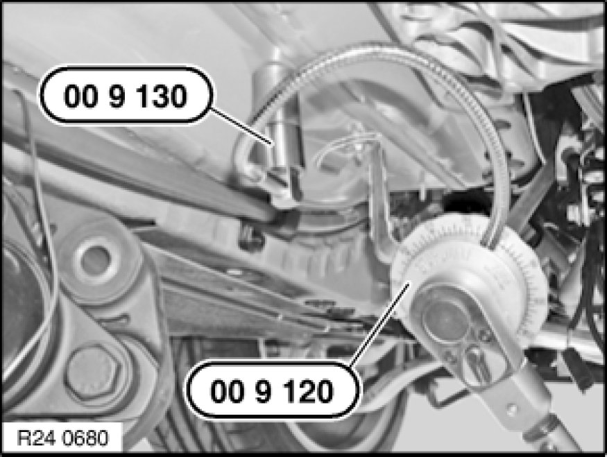

Removing and Installing Automatic Transmission (GA6L45R)
24 00 032 - Removing and installing automatic transmission (GA6L45R)

Special tools required:
- 00 2 030 00 2 030 Universal Hydro-Lifter Basic Unit
- 00 9 010 00 9 010 Torx E18 Socket
- 00 9 120 00 9 120 Torque Angle Measuring Dial
- 00 9 130 00 9 130 Magnet with 1/2 " Connection
- 23 4 050 23 4 050 Universal Transmission Bracket
- 24 1 110 24 1 110 Socket with Magnet
- 24 2 390 24 2 390 Covering Cap
- 24 4 160 24 4 160 Support Bracket
- 24 4 161 24 4 160 Support Bracket
- 24 4 166 24 4 160 Support Bracket

Important!
After completion of work, check transmission oil level Procedures.
Use only the approved transmission fluid.
Failure to comply with this requirement will result in serious damage to the automatic transmission!
Important!
Aluminium-magnesium materials.
No steel screws/bolts may be used due to the threat of electrochemical corrosion.
A magnesium crankcase requires aluminium screws/bolts exclusively.
Aluminium screws/bolts must be replaced each time they are released.
Aluminium screws/bolts are permitted with and without color coding (blue).
For reliable identification:
Aluminium screws/bolts are not magnetic.
Jointing torque and angle of rotation must be observed without fail (risk of damage).

Necessary preliminary tasks:
- Disconnect battery negative lead Disconnecting and Connecting Battery Negative Lead
- Remove underbody protection with bracket at front and rear.
- Remove reinforcement plate
- Remove complete exhaust system Service and Repair
- Remove heat shields
- Remove front propeller shaft at transfer box and tie to one side
- Support engine with lifter when removing transmission
Release screws (1).
Remove bracket and heat shield.
Unclip lines (2).
Remove bracket (3).
Disconnect plug connector (1).
Release screws (2).
Remove retaining plate (3).
Tightening torque 24 00 2AZ Transmission in General.

Release aluminium screws on right next to cable retaining plate with special tool 00 9 010 00 9 010 Torx E18 Socket.
Aluminium screws must be replaced.
Tightening torque 24 00 2AZ Transmission in General.
Grip clamping sleeve (1).
Loosen nut (2).
Release screws (3).
Remove cable (4).
Tightening torque 25 16 1AZ [1][2]Shifter A/T.
Installation Note:
Adjust selector lever Adjusting Selector Lever (GA6L45R) AWD
Release screw (1).
Disconnect hydraulic lines (2) to transmission fluid cooler.
Installation Note:
Replace sealing rings.
Release nut (1) and bracket from transmission oil lines on oil sump.

Detach plugs (1) and (2) from servomotor.

Supporting transmission:
Support transmission with special tools 23 4 050 23 4 050 Universal Transmission Bracket, 00 2 030 00 2 030 Universal Hydro-Lifter Basic Unit.
Secure transmission to mounting with tensioning strap (1).
Tasks are described in Transmission bracket Universal BMW Transmission Take-Up.
After completion of work, check transmission oil level.
- Remove propeller shaft from transmission.
- Release center bearing.
- Tie propeller shaft to one side.
Tasks are described in Removing propeller shaft Removing and Installing Propeller Shaft (Cardan Universal Joint) Completely.
Important!
Do not allow propeller shaft to hang from fixed ball joint (risk of damage).
Unfasten screws and remove transmission cross-member.
Tightening torque 24 71 1AZ 24 71 Transmission Mounts.
Crank engine at vibration damper in direction of rotation until screw (1) is visible in opening.
Release all screws of torque converter with special tool 24 1 110 24 1 110 Socket with Magnet.
Crank engine further and release remaining 5 bolts.
Tightening torque 24 40 1AZ [1][2]Specifications.
Prepare special tool (1) 24 4 161 24 4 160 Support Bracket with shaped piece (2) 24 4 166 24 4 160 Support Bracket.
Insert special tool 24 4 160 24 4 160 Support Bracket into opening of transmission housing and tensions slightly with screw (1).
Raise by turning screw (2) and clamp down.
Then tighten down screw (1).

- Unlock and disconnect plug (1) by turning.
- Do not touch pins.
- Release cable from retainers.
- Insert special tool 24 2 390 24 2 390 Covering Cap in sealing sleeve.
Operations are described in
Notes on mechatronics Procedures
Important!
Read and comply with important note.

Release screws.
Installation Note:
Observe screw fastening sequence without fail.
Tightening torque, steel screws 24 00 1AZ Transmission in General.
Aluminium screws must be replaced.
Tightening torque and angle of rotation, aluminium screws/bolts 24 00 2AZ Transmission in General.

Installation Note:
Tighten down screws/bolts to specified torque.
Secure rotation angle of special tool 00 9 120 00 9 120 Torque Angle Measuring Dial with magnet 00 9 130 00 9 130 Magnet with 1/2 " Connection
to underbody and screw down blue aluminium screws/bolts in accordance with angle of rotation.
Angle of rotation 24 00 2AZ Transmission in General.
Installation Note:
Bore (1) in driving disc must be accessible from opening on engine oil pan.
Check that dowel sleeves are correctly seated.
Replace damaged dowel sleeves.

Installation Note:
Rotate torque converter until bore in torque converter is flush with bore in driving disk.
Flange automatic transmission to engine.